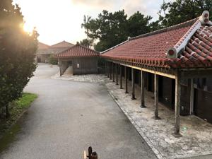
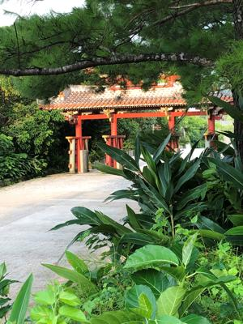
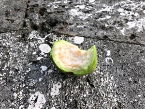
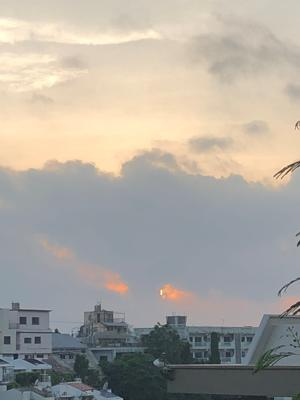

うるがいの話 ある日
最新: 諦めない気持ち
うるがいとは 前提知識です
カニの画像をクリックすると『うるがいの話』サイトを表示します
うるがい(ｳﾙｶﾞｲ urugai)とは、『もずくがに』の名前でとても大きくなります。
たながー（ﾀﾅｶﾞｰtanagaa）とは手長えびのことで、何種類かあり大きいのは車 エビぐらいになります。
ぶながー(bunagaa)とは、赤い髪の毛、赤い身体、そして身長は１ｍ２０ｃｍ ぐらい、川の蟹を食べているの目撃された。場所は沖縄県国頭郡大宜味村のと ある村僕の隣近所に住んでいる爺さんから、聞いた話です。
2021年08月09日 (月）
諦めない気持ち
17:03




昨日に続き、朝から無料タブ譜作成ソフトの機能テストをする。昼過ぎ突然エ
ラーになり、演奏ができなくなった。ん！、仕方ない、再インストールするべ
え！、一緒だ。パソコンを再起動してみる、それでもダメ。どれどれ、ん、こ
のソフトは、２００３年で開発が止まっている古いジャン。試しにとWindows
XPのディスクトップパソコンにインストールにして動かしてみる。演奏の音
が悪すぎ！。再びネットを調べまくる、でも解決策はない。ふと、タスクマネ
ージャーで動いているプロセスをみる。なんとなく、怪しいHD Audio
Background Processというプロセスを見つけ終了させる。そしてソフトを動か
してみる、演奏ができた。諦めないことは大事だ。
オリンピック閉会式をライブで見る。おしまいのほうに、パラリンピックをや
るよという映像を流していた。おおおお、本当にやるのか！！と観戦疲れの体
が驚いていた。